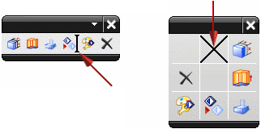
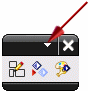
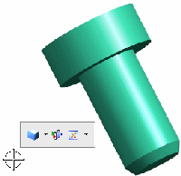
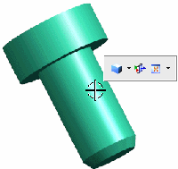
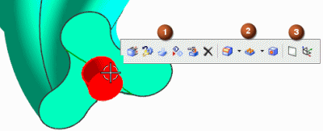

You can customize shortcut toolbars and radial shortcuts.
The Customize dialog box must be open for you to add or remove commands from a shortcut toolbar or radial shortcut. Your customized shortcut toolbars and radial shortcuts are available only in the application in which you do the customization.
Hold Ctrl and drag a command from a toolbar, menu, or from the Commands tab in the Customize dialog box, to the shortcut toolbar or radial shortcut.

On the title bar of the shortcut toolbar, click the Toolbar Options arrow, and use the Add or Remove Buttons menu to add the commands you want.

On the Shortcut Toolbars tab of the Customize dialog box, select View, All Features, or All Objects in the Selected Objects list and drag the required commands to the displayed shortcut toolbar.
Where the commands that you add are displayed depends on the shortcut toolbar.
The View shortcut toolbar commands are displayed only on the View shortcut toolbar. This shortcut toolbar is displayed when you right-click in the background of the graphics window or when you hold Ctrl and click an object.
|
 |
 |
The All Features shortcut toolbar commands are appended to the shortcut toolbar when all the selected objects are features.
The All Objects shortcut toolbar commands are appended to all shortcut toolbars.
When you select an object, the commands on the shortcut toolbar are displayed in the order shown.

|
1 |
Object-specific commands |
|
|
2 |
Commands added to the All Features shortcut toolbar |
|
|
3 |
Commands added to the All Objects shortcut toolbar |
|
|
Toolbar |
Toolbar Options→Add or Remove Buttons→Customize |
|
Menu |
Tools→Customize |
|
Location in dialog box |
Shortcut Toolbars tab |